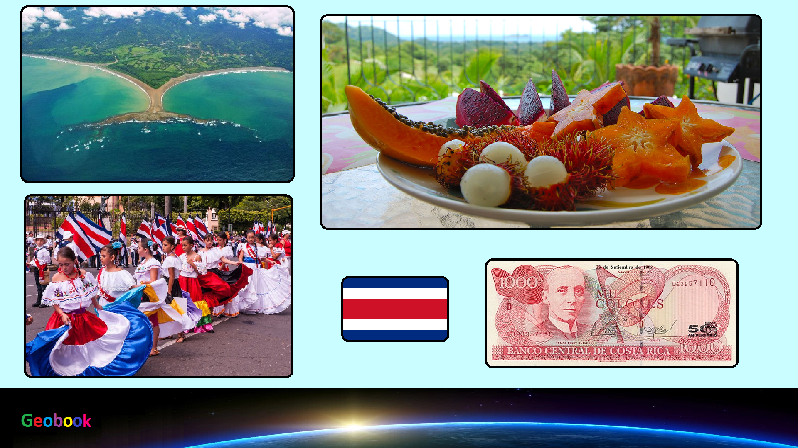

____
Флаг
Белый и синий цвета флага символизируют независимость страны, а красный — цивилизацию. На красной полосе размещён герб Коста-Рики, на котором изображены три вулкана между двух океанов, напоминающие старый федеральный герб, олицетворяют географическое положение и рельеф Коста-Рики.

Герб
Герб Коста-Рики — два судна с обеих сторон представляют Карибское море и Тихий океан, оба из которых ограничивают Коста-Рику. Суда также представляют морскую историю страны, а восходящее солнце символизирует свободу.

____
